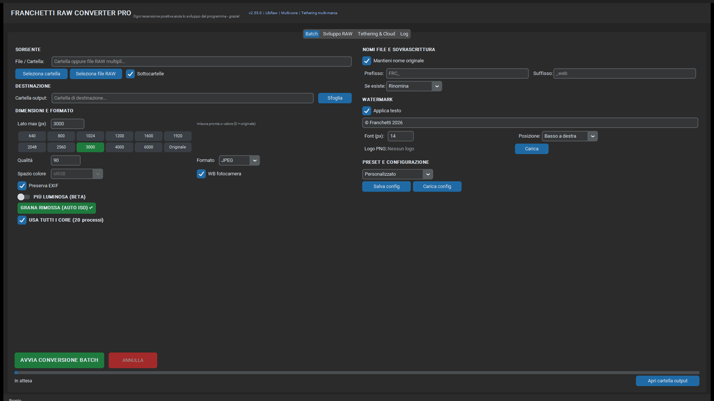
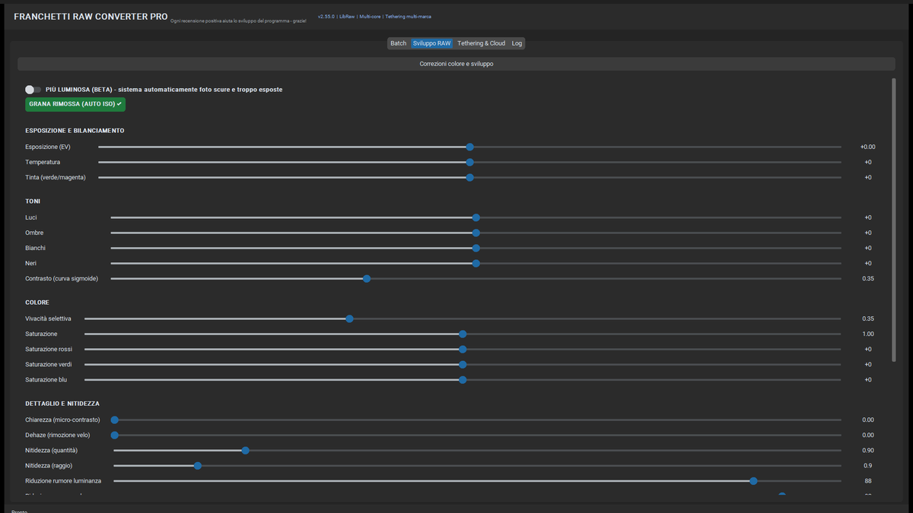
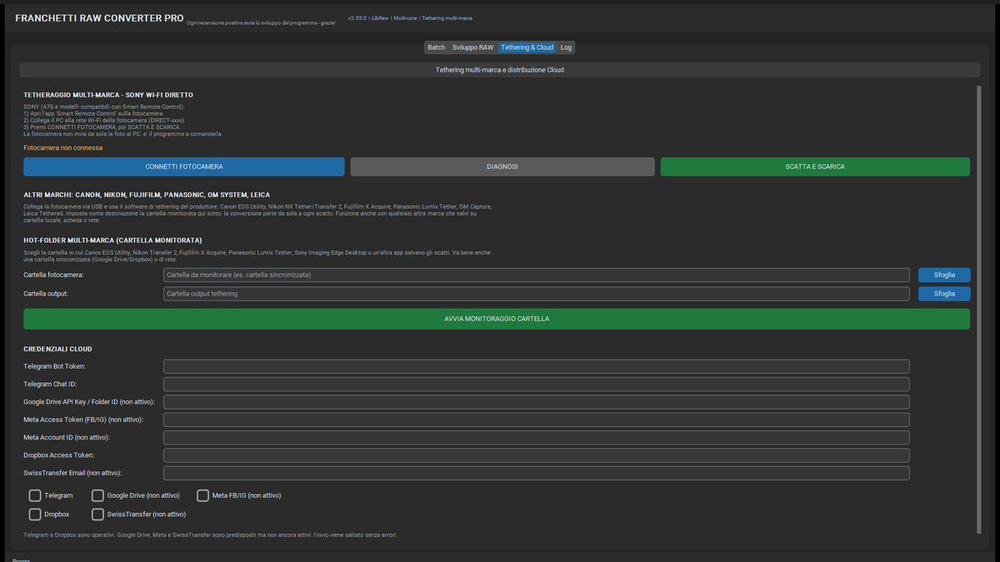
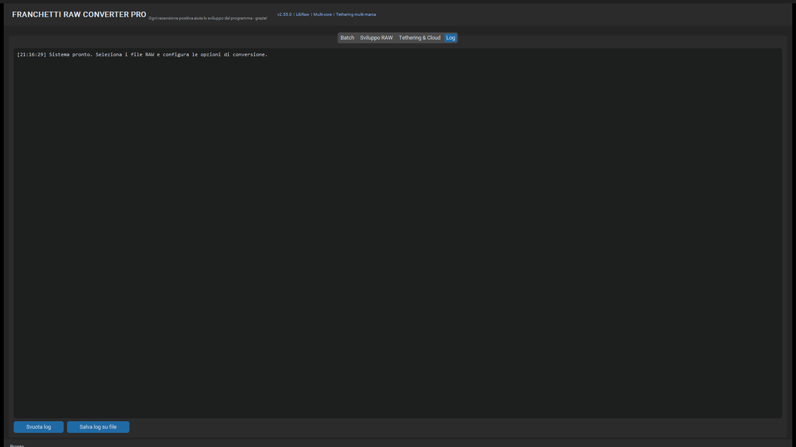

Convertitore RAW → JPEG professionale con watermark copyright. Portable, gratuito, open source.
⬇ Scarica v2.55.0 (78 MB) Installa con Setup (79 MB) Leggi la Guida completaInterfaccia reale della v2.55.0: Batch, Sviluppo RAW, Tethering multi-marca e Log.




Sony ARW, Canon CR2/CR3, Nikon NEF, Fujifilm RAF, Olympus ORF, Panasonic RW2, DNG, PEF, SRW e molti altri
Batch parallelo con ProcessPoolExecutor: tutti i core logici, limite automatico in base alla RAM, annullamento immediato.
Qualità massima nel downscaling. Preset da 640 a 6000 px oppure risoluzione originale.
Testo Unicode, font 8-600, cinque posizioni, opacità e ombra per leggibilità su qualsiasi sfondo. Supporto logo PNG.
Nessuna installazione, nessuna dipendenza, nessun registro, zero telemetria. Singolo .exe (78 MB).
JPEG 1-100 con profilo ICC sRGB incorporato; esporta anche PNG, TIFF e WEBP.
Nomi originali o progressivi, prefisso/suffisso, anti-collisione, Salta o Sovrascrivi.
Canon, Nikon, Fujifilm, Panasonic, OM System, Leica tramite software del produttore + hot-folder; Sony A7S anche via Wi-Fi DIRECT.
Denoise ibrido in Y/Cb/Cr (guided filter + non-local means nelle zone piatte), dettaglio e bordi conservati; PIU' LUMINOSA aggiunge vividezza senza spostare i colori.
EXIF preservato con orientamento corretto; correzione automatica di foto scure e sovraesposte.
Tutte le funzioni della scheda Batch, dello Sviluppo RAW, del Tethering e del Cloud spiegate passo per passo. Include impostazioni consigliate per web, stampa, archivio, ritratti, paesaggi e foto notturne, oltre alla soluzione dei problemi più comuni.
Apri la Guida completaARW, CR2, CR3, NEF, RAF, ORF, RW2, DNG, PEF, SRW, X3F, 3FR, FFF, RAW, RWL, DCR, K25, KDC, MOS, MRW, NRW
JPEG (qualità 50-100), Progressive, Lanczos-3, sRGB
Scarica ora gratuitamente. Nessuna registrazione, nessuna installazione, nessun dato raccolto.
⬇ Scarica Franchetti Raw Converter Pro v2.55.0